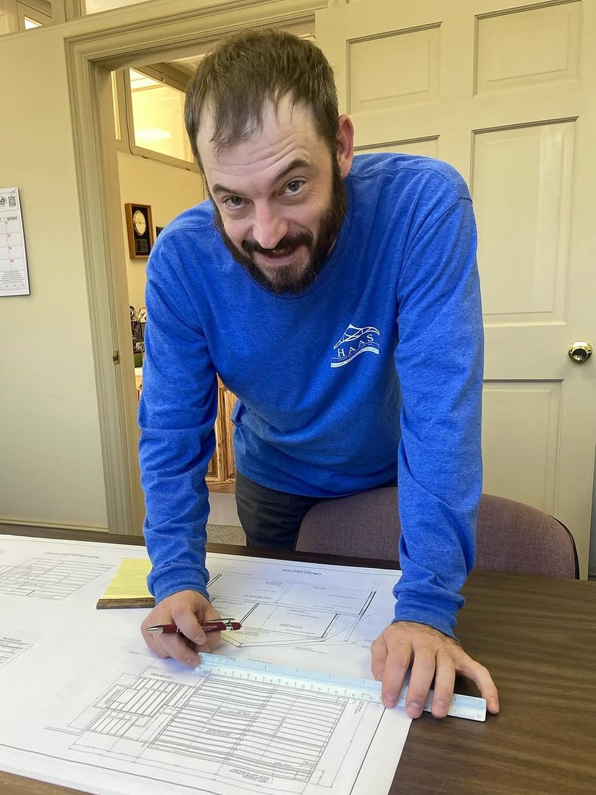
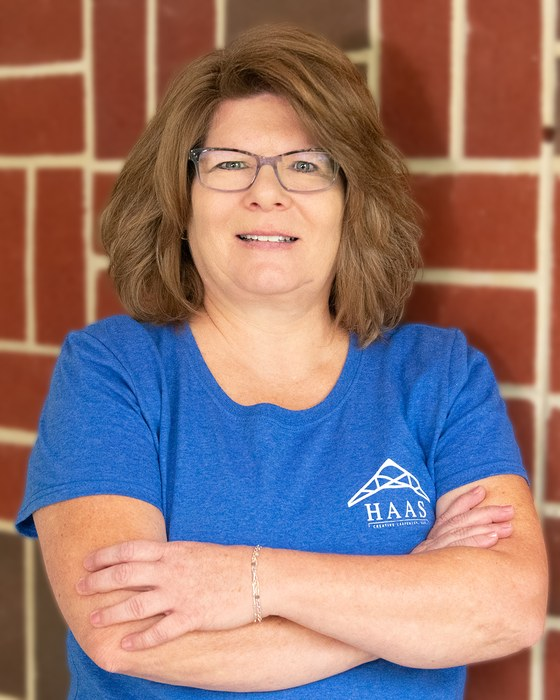
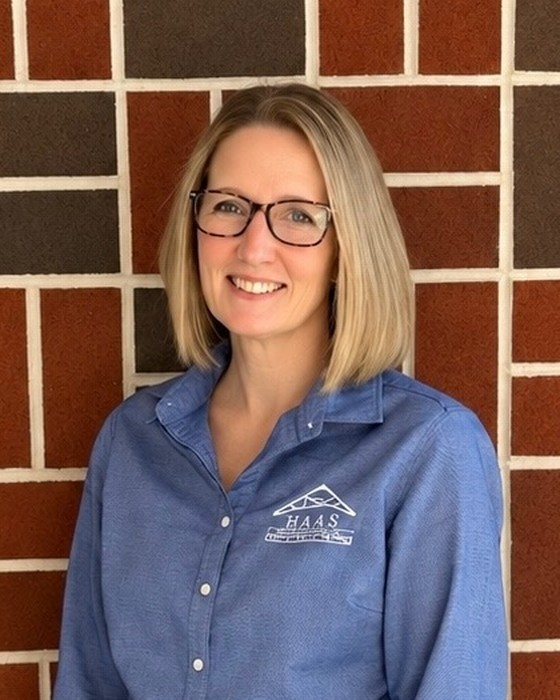
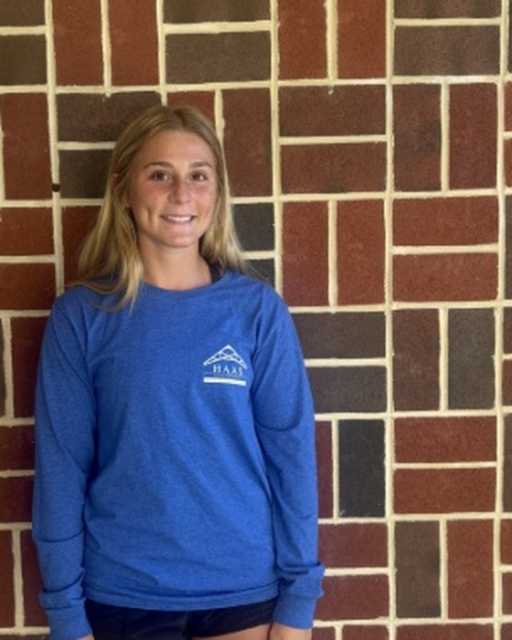
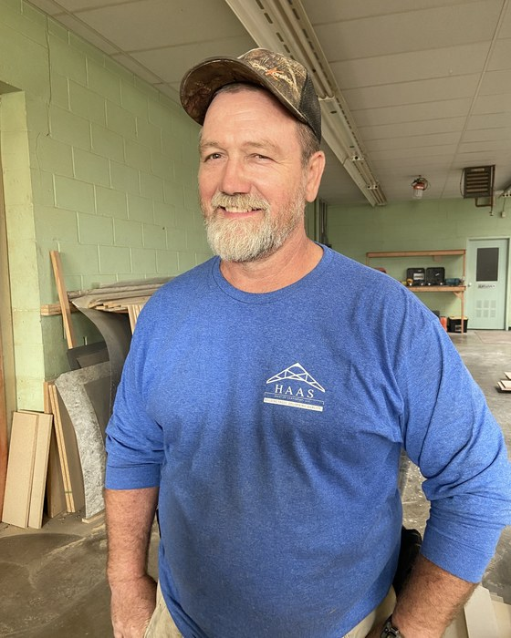
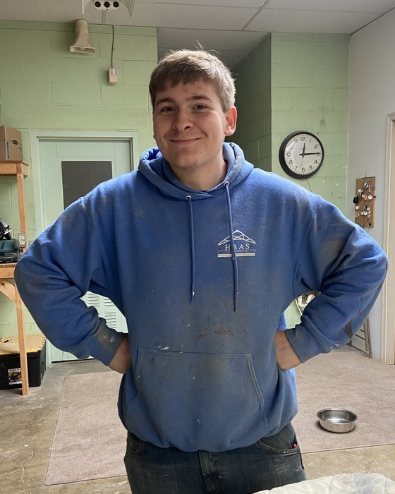
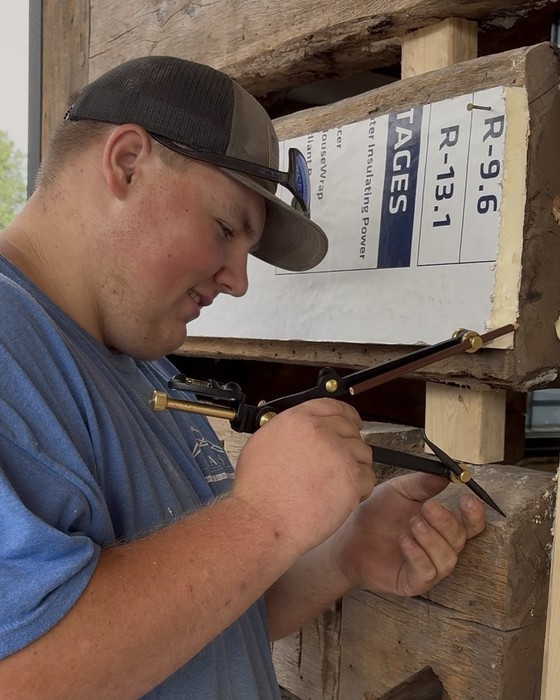
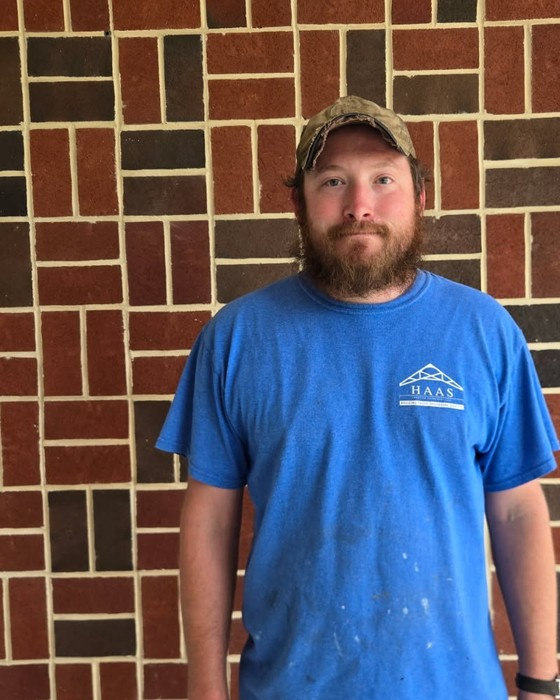

After — Bear removed, William removed

DUSTIN HAASFACEBOOK →LOYSVILLE, PENNSYLVANIA
DUSTIN AND THE CREW.
“After working for more than 15 years for ‘the other guys’, I decided I had had enough.” Dustin Haas, Loysville
Started 2016 · bought Collins Construction and its shop, 2024 · custom homes, remodels and the woodwork in them
The crew
 EmilyProject manager
EmilyProject manager
TracyOffice administrator BrookeFinance administrator
BrookeFinance administrator
RobinSelections coordinator
MaddieSocial media
ScottField crew
TrevinField crew
LandenField crew
ZacField crew
Crew row is now four faces: Emily, Tracy, Brooke, Scott. The line underneath reads
“Plus Trevin and Landen — two full-time hands” (was “three”).